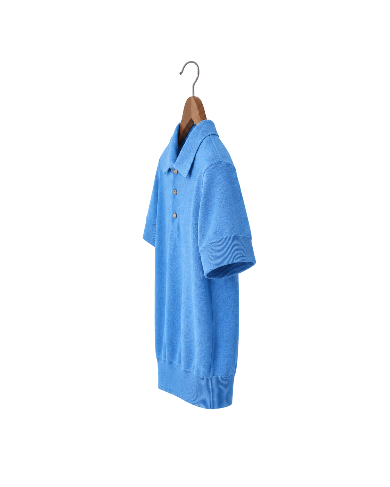
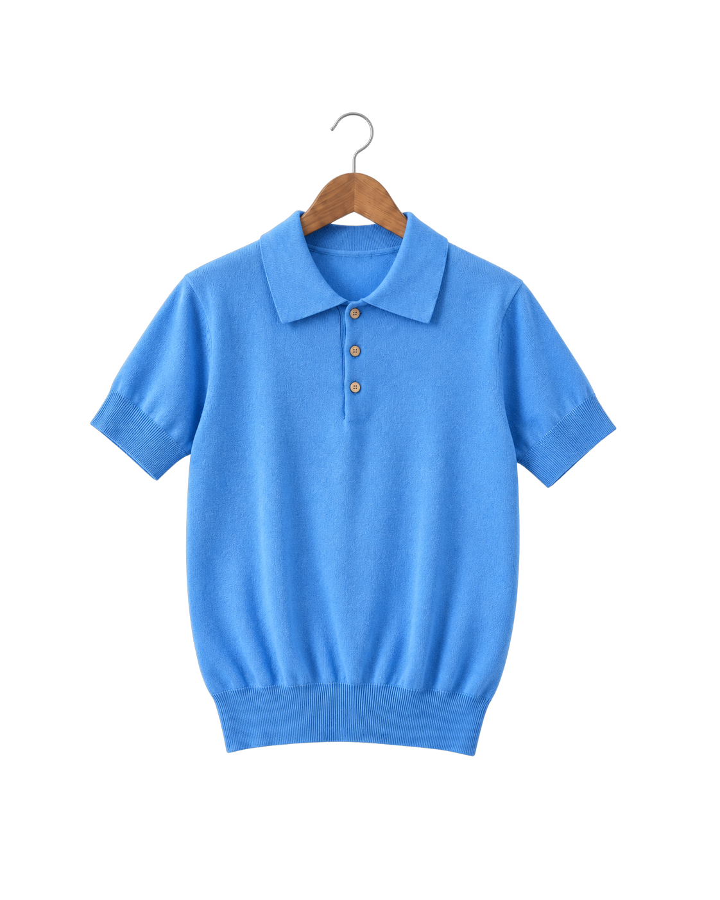

用 AI 实现可交互的服装展示
将服装照片与参考动效转化为浏览器中的交互原型，通过 AI 辅助编程、素材对齐和动效调校，呈现具有立体感的服装浏览体验。
三个关键实现
这个演示使用照片与浏览器变换构建立体感。核心在于视角交接、稳定支点和带惯性的运动。


侧面照片正面照片
两张照片，衔接一次转身
正面图与侧面图叠在同一位置，围绕挂钩执行 rotateY 旋转。在转到接近侧边时交接透明度，使两个视角连续过渡。
悬停服装提高叠放层级，邻居根据图片宽度向左右让位，为正面轮廓留出空间。
对齐图片，避免转身时跳动
素材脚本使用 Pillow 和 NumPy 读取透明通道，定位挂钩顶点与衣摆。按有效长度缩放正面图，再平移到侧面图的挂钩位置。
CSS 将旋转原点设为图片的 49% 12.6%，使两张图围绕同一支点运动。
弹簧计算，让运动带有惯性
通过 requestAnimationFrame 持续更新动画。刚度控制接近目标的速度，阻尼控制回弹衰减；转身使用刚度 210、阻尼 15，产生快速转正后的轻微回弹。
左右摆动与前后扭摆错开相位，形成更丰富的悬挂感。系统开启减少动态效果时，直接更新状态并关闭摆动。